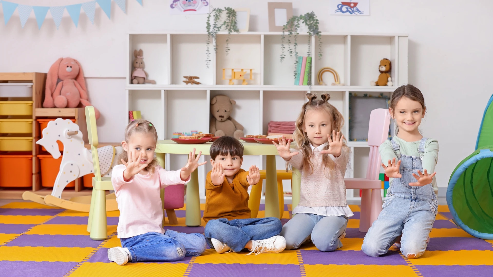
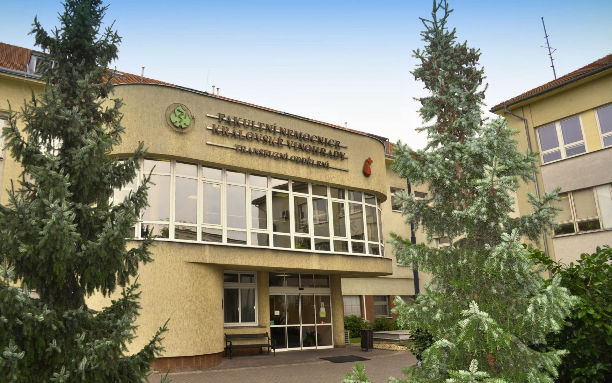
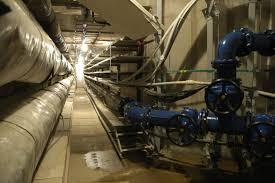
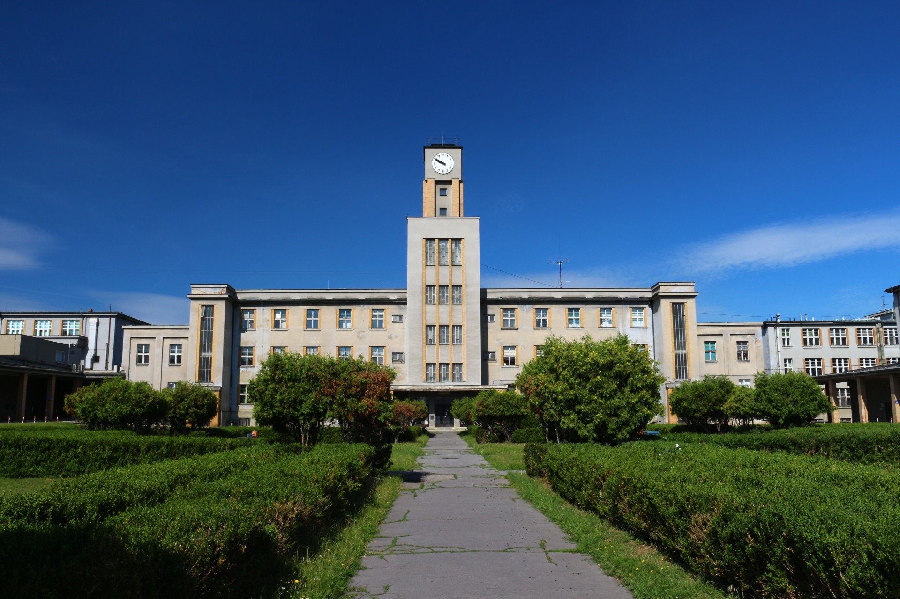
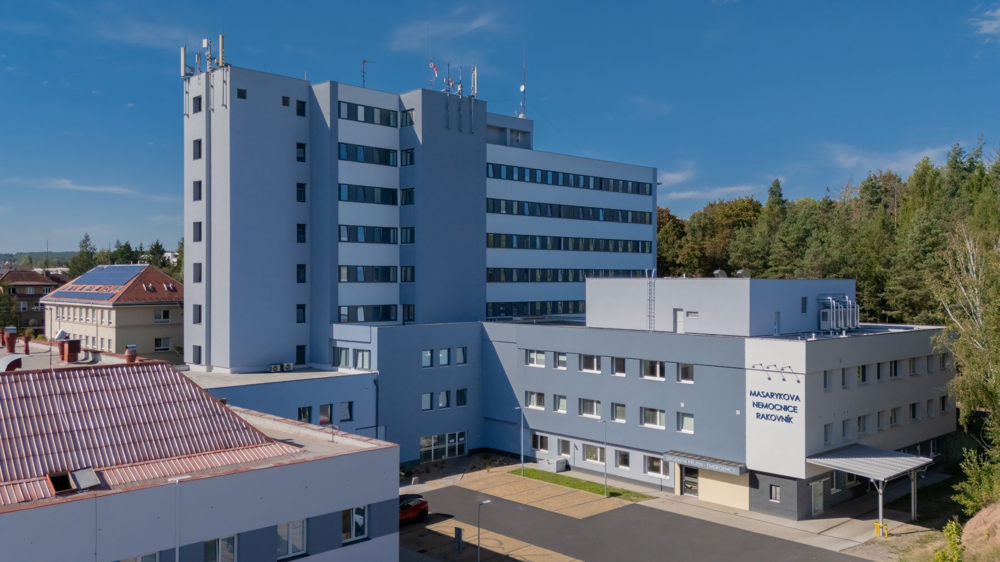
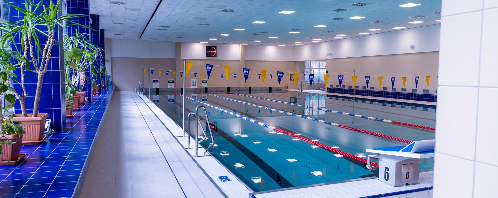
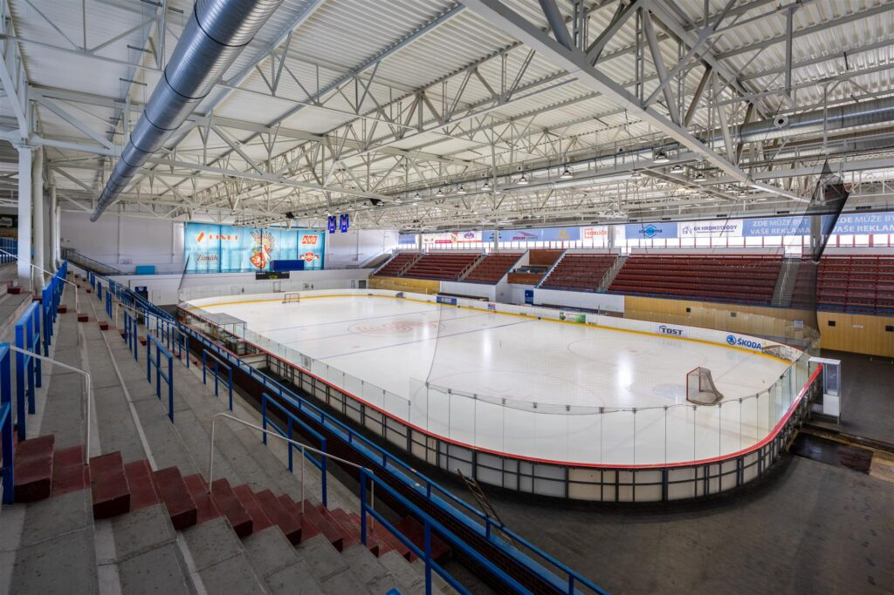
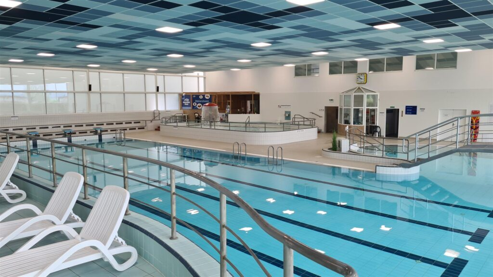
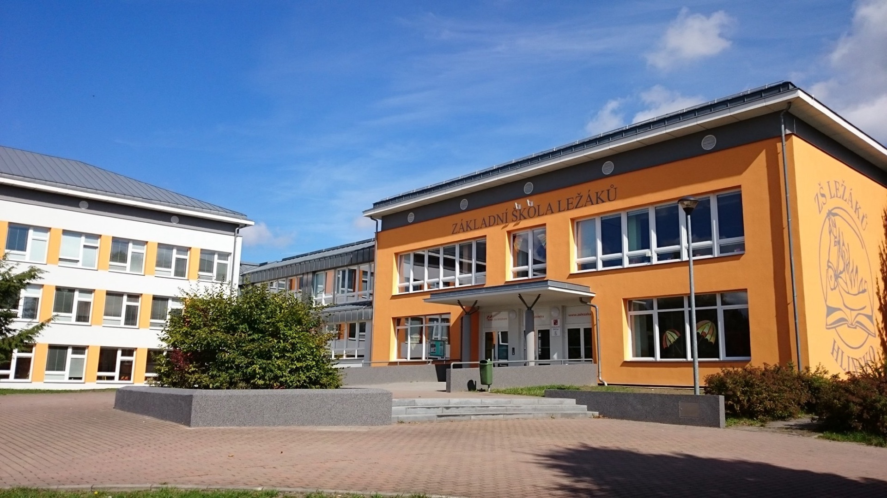

Reference
Stavíme pro nemocnice, banky i města.
Vše na jednom místě: realizujeme generální dodávky, máme vlastní divizi TZB, zajišťujeme servis VZT.
Vše na jednom místě: realizujeme generální dodávky, máme vlastní divizi TZB, zajišťujeme servis VZT.

Veřejné zakázkyNový objekt pro dětské skupiny včetně zpevněných ploch a parkování.

Veřejné zakázkyModernizace onkologického centra a stavební úpravy pracoviště CT a PET/CT.
 TZB
TZBRekonstrukce vzduchotechniky, klimatizace, vytápění a měření a regulace.

Veřejné zakázkyOpravy pražských kolektorů včetně vzduchotechniky a pochozích roštů.
 Veřejné zakázky
Veřejné zakázkyStavební úpravy objektů D a G a výměna VZT jednotky operačního sálu.
 Veřejné zakázky
Veřejné zakázkyStavební úpravy pro lakovací kabinu v Hangáru F.
 TZB
TZBDoplnění chlazení do 2. a 3. patra budovy muzea.
 Veřejné zakázky
Veřejné zakázkyPůdní vestavba základní školy.

TZBVzduchotechnika a chlazení při energeticky úsporné renovaci pavilonu.

Veřejné zakázkyRekonstrukce akutní péče.

Veřejné zakázkyTřetí etapa rekonstrukce plaveckého bazénu.

Veřejné zakázkyVýměna střešního pláště zimního stadionu včetně zateplení.
Rekonstrukce vzduchotechniky operačních sálů.
 Veřejné zakázky
Veřejné zakázkyŠest zakázek: přestavby pracovišť, PET, stravovací provoz i chlazení.

Veřejné zakázkyEnergeticky úsporná opatření při rekonstrukci plaveckého areálu.
 Veřejné zakázky
Veřejné zakázkyDochlazení budovy ústředí, výměna vzduchotechniky a bezbariérový vstup.

TZBVzduchotechnika školní kuchyně.
Rádi vám pošleme podrobnosti nebo kontakt na investora.